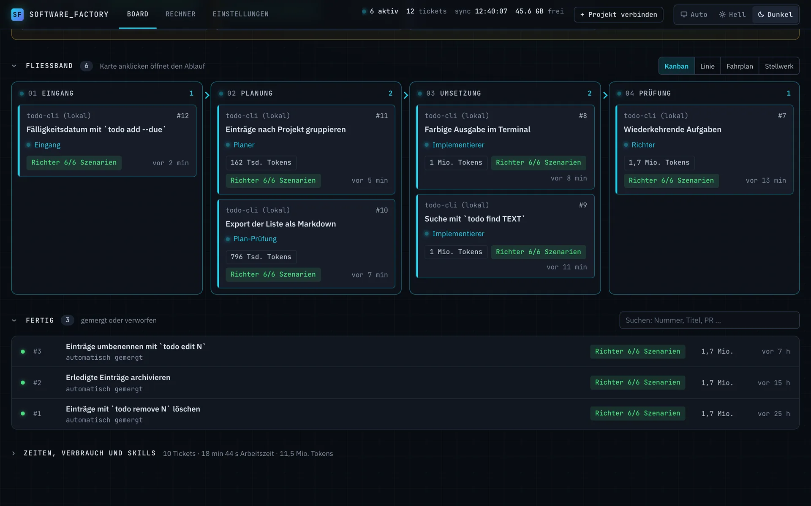
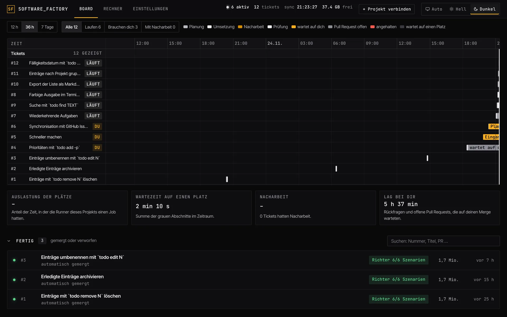
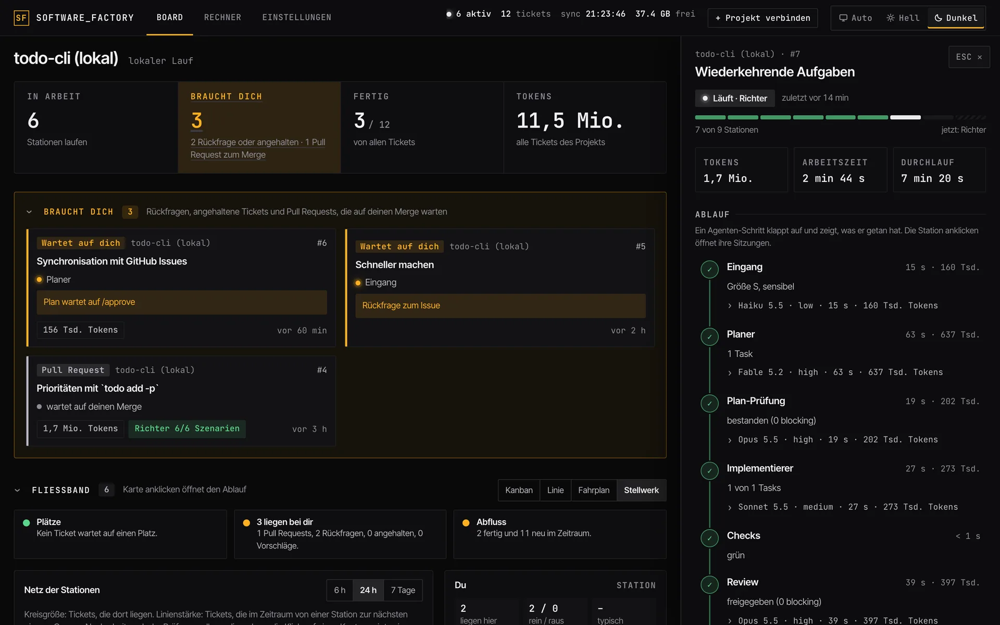
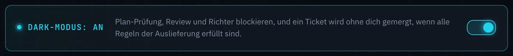
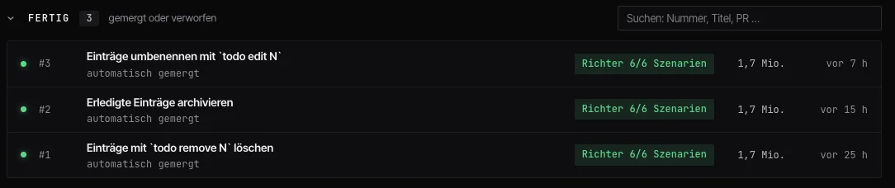

Die Fabrik für geprüften Code
Issue rein, Pull Request raus. Dazwischen planen, bauen und prüfen Claude-Agents den Code in acht festen Stationen. Ein normales Python-Skript steuert sie, kein Agent. Am Ende testet ein Richter gegen Szenarien, die der Implementierer nie gesehen hat.
Klick auf eine Station zeigt, was sie liest und schreibt. Open Source unter MIT-Lizenz.
Ein echtes Ticket, von Anfang bis Ende
Kein nachgestelltes Beispiel: Das ist ein Lauf der Factory in einem Testprojekt, einer kleinen To-do-Liste für die Kommandozeile. Zeiten, Kosten und Zitate stammen aus den Dateien dieses Laufs.
Einträge mit todo remove N löschen
Bisher lassen sich Einträge nur abhaken. Falsch angelegte oder überholte Einträge bleiben deshalb für immer in der Liste. Das neue Kommando entfernt den Eintrag mit der Nummer N; die Einträge dahinter rücken nach.
| Station | Modell | Dauer | Kosten | Ergebnis |
|---|---|---|---|---|
| Eingang | Haiku 5.5 | 15 s | 0,004 $ | Fester Auftrag, Größe S, 5 Abnahmekriterien |
| Planer | Fable 5.2 | 63 s | 0,175 $ | 1 Task, 9 Abnahmekriterien, 5 benannte Risiken |
| Plan-Prüfung | Opus 5.5 | 19 s | 0,165 $ | bestanden, 0 blockierende Punkte |
| Implementierer | Sonnet 5.5 | 27 s | 0,105 $ | todo/cli.py und tests/test_cli.py |
| Checks | – | < 1 s | – | Tests des Projekts grün |
| Reviewer | Opus 5.5 | 39 s | 0,232 $ | freigegeben, 0 blockierend, 5 Hinweise |
| Richter | Opus 5.5 | 53 s | 0,294 $ | 6 von 6 verborgenen Szenarien bestanden |
„Die bestehende Nummernprüfung von
donestützt sich aufstr.isdigit(). Das akzeptiert auch Zeichen wie²[…] und führt zu einem Traceback statt zur Fehlermeldung.removedarf bei solchen Eingaben nicht abstürzen.“
„Ich konnte die Testsuite in dieser Station nicht ausführen, weil das Kommando nicht freigegeben war. Dass sie grün ist, habe ich aus dem Code abgeleitet und nicht gemessen.“
Zahlen aus acht Tagen Betrieb
Das Beispiel oben ist klein. In zwei privaten Projekten lief die Factory vom 16. bis 23. November 2026 an echten Tickets. Die Zahlen sind aus den Zustandsdateien dieser Läufe gezählt.
Wie viele der offenen Pull Requests später von Hand gemergt wurden, steht nicht in diesen Dateien.
Das Board zeigt jedes Ticket auf dem Band
Ein lokales Board liest den Zustand aller Projekte: was läuft, was dich braucht, was fertig ist. Die Aufnahmen zeigen das echte Board mit einem Beispielprojekt.





Dark-Modus: mergen ohne Menschen
Du schaltest ihn je Projekt ein. Dann sind Plan-Prüfung, Review und Richter Tore, und die Factory mergt einen Pull Request selbst, wenn alle Regeln der Auslieferung erfüllt sind. Ohne Dark-Modus wartet jeder Pull Request auf dich.
- Label setzen
factory:goan einem Issue startet das Ticket. - Rückfragen beantwortenIst der Auftrag unklar, fragt der Eingang im Issue nach.
- Großen Plan freigebenMit
/approveim Issue, oder mit einem Änderungswunsch. - Mergen oder mergen lassenVon Hand, oder im Dark-Modus automatisch nach dem Richter.


Was noch nicht geht
- Nacharbeit ist die Regel. Drei von vier Pull Requests gingen mindestens einmal zurück. Das kostet Tokens und Zeit.
- Der Richter prüft über die Kommandozeile. Für Oberflächen und Spiele (Messwerte, Screenshots) fehlt die Umsetzung.
- Kein Merge-Queue, kein Rollback. Vor dem Merge wird der Basis-Branch eingearbeitet und erneut geprüft; der Richter läuft danach nicht noch einmal.
- Parallele Arbeiter teilen sich eine Maschine. Die Tasks eines Tickets laufen auf demselben Runner, nicht auf mehreren.
- Pull Requests vom Job-Token starten keine anderen Workflows. Ein Projekt mit Pflicht-Checks auf Pull Requests braucht dafür einen eigenen Token.
- Lokal gibt es keine Sandbox. Der Implementierer darf dort nur die Programme starten, die das Projektprofil erlaubt.
- Das Board ist auf Deutsch. Diese Seite und die README gibt es auf Englisch; das Board, die Einstellungsseite und die Kommentare der Factory an Issues nicht.
Schnellstart
- Python 3.12
- GitHub CLI
gh, angemeldet - Claude Code mit einem Claude-Abo; für GitHub das Secret aus
claude setup-token
Im Board „+ Projekt verbinden“ wählen. Die Seite legt Labels, Workflow und Profil per Pull Request in deinem Repo an.
# holen und starten $ git clone https://github.com/HanSur94/software-factory.git $ cd software-factory $ pip install -r requirements.txt $ python3 -m factory board Board läuft auf http://127.0.0.1:8787 # oder ein Ticket ganz lokal, ohne GitHub $ python3 -m factory local --repo ../mein-projekt \ --issue 1 --issue-file ticket.md --budget 5